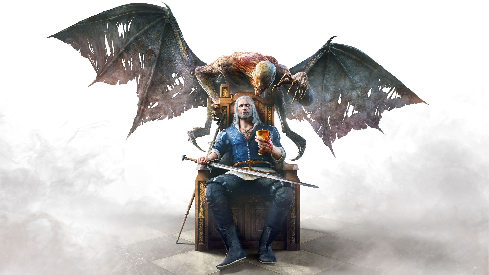
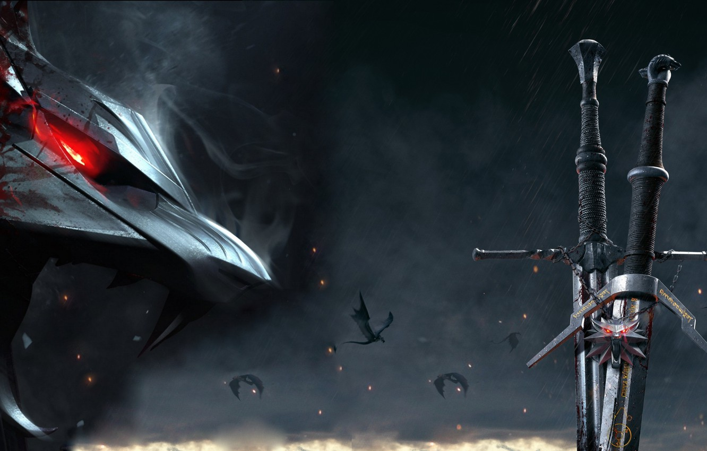
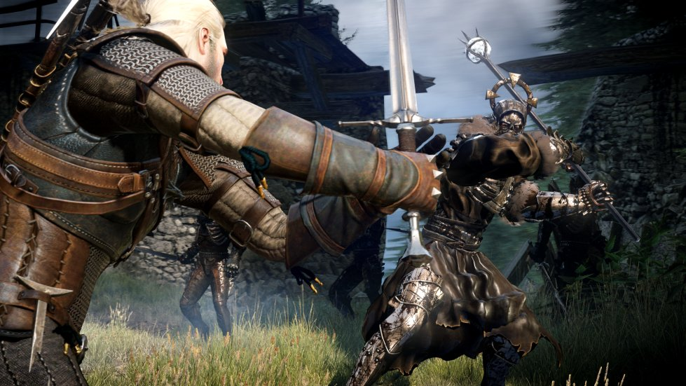
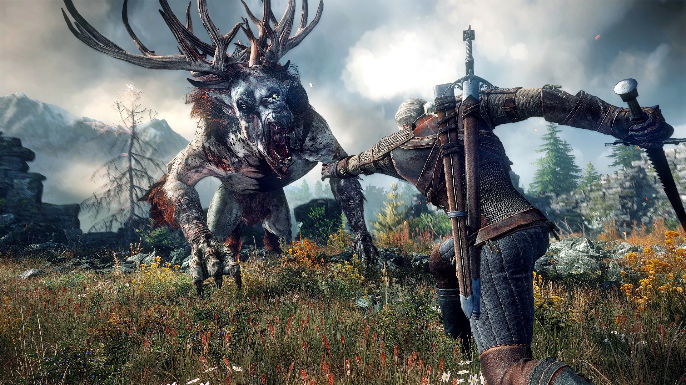

«Ведьмак 3: Дикая Охота» — мультиплатформенная компьютерная игра в жанре action/RPG, разработанная польской студией CD Projekt RED по мотивам серии романов «Ведьмак» польского писателя Анджея Сапковского, выпущенная в 2015 году для Windows, PlayStation 4 и Xbox One.
Игра является продолжением компьютерных игр «Ведьмак» и «Ведьмак 2: Убийцы королей», заключительной частью трилогии.
Действие игры происходит в вымышленном фэнтезийном мире, напоминающем средневековую Европу. Главный герой Геральт из Ривии, «ведьмак» — профессиональный охотник на чудовищ — отправляется в путешествие в поисках девушки по имени Цири, обладающей сверхъестественными способностями.
В отличие от предыдущих игр серии, «Ведьмак 3: Дикая Охота» — игра с открытым миром: игрок может свободно путешествовать по обширным территориям, самостоятельно находя новые места и задания.
Игра получила чрезвычайно высокие оценки прессы: обозреватели высоко оценили повествование, дизайн мира, боевую систему и графическую составляющую игры. «Ведьмак 3: Дикая Охота» также оказалась коммерчески успешной: было продано свыше 10 миллионов копий игры. Она собрала ряд наград «Лучшая игра года», присуждаемых разными изданиями и организациями. Для игры было выпущено два обширных дополнения, «Каменные сердца» и «Кровь и вино», также высоко оценённые обозревателями.
